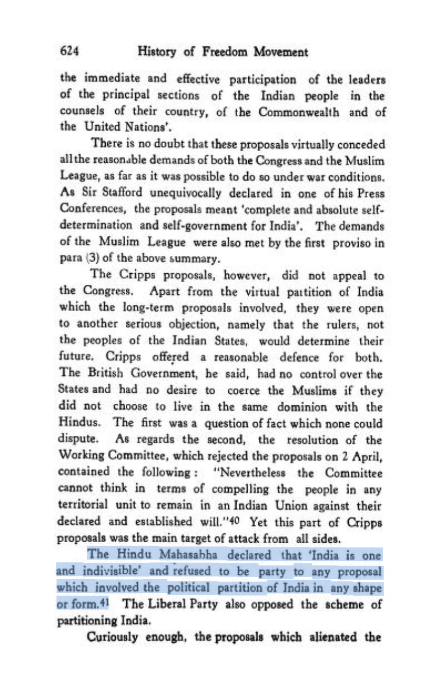

Invisibilis Historia
A History Notebook, by Vinamr Sachdeva.
Although Savarkar said that "[he had] no quarrel with Mr. Jinnah’a two nation theory. We, Hindus, are a nation by ourselves and it is a historical fact that Hindus and Muslims are two nations", he further added that (paraphrasing) Hindu Mahasabha was always willing to extend its hand of co-operaiion to all who accept the four principles, namely, territorial integrity of India, majority rule in provinces and the Centre, residuary powers in we Centre and recruitment to public servicee on merit alone. The second-part of the quote is often missed by lefties who want to portray Savarkar as supporting Partition.
From Mitra, H. N., Ed. The Indian Annual Register. Vol 2. 1943. p. 10. https://archive.org/details/in.ernet.dli.2015.45825/page/n27/mode/2up.
(From his demand of territorial integrity of India but him mentioning that Hindus and Muslims are two different nations, it seems like he was making a distinction between a nation and a state.)
He clarified this statement and told how he was half-quoted the next day to the newspaper Kaal:

From Sampath, Vikram. Savarkar (Part 2): A Contested Legacy, 1924-1966. p. 347.
In addition to this, Hindu Mahasabha's (including Savarkar himself) staunch opposition to the idea of partition can be noted:

From Majumdar, RC. History of Freedom Movement of India. Vol 3. p. 624. https://archive.org/details/in.ernet.dli.2015.125612/page/n594/mode/2up.

From Majumdar, RC. History of Freedom Movement of India. Vol 3. p. 681-682. https://archive.org/details/in.ernet.dli.2015.125612/page/n651/mode/2up.
One can look at history and correlate certain actions, i.e. INA's campaign, their Red Fort Trials and the revolt of 1946, with an effect, i.e. British granting India dominion status in 1947 and then leaving, but if one finds statements from British decision makers clearly stating that their decision of leaving was motivated by those exact actions, I think it is reasonable to claim that the action and the effect were causally related. Until now (i.e. 15 August 2022) I only had Calcutta High Court's Chief Justice PB Chakraborthy's letter to historian RC Majumdar in which he stated that Clement Atlee, the Prime Minsiter of Britain who gave ascent to the Indian Independence (sic) Act, 1947 but now (thanks to Mr. Anuj Dhar and my friend Pratham) I know that the clinching evidence for making this causal relationship exists and it is from the declassified Intelligence Bureau files from the National Archives and from the Transfer of Power Volume 6:
From National Archives.
From Mansergh, Nicholas. The Transfer of Power 1942. Vol 6.
Finally found the real reason Socrates was tried and convicted while reading I.F. Stone's 1979 NYT newspaper article on the issue. (Archived copy of the article can be found here (click). Pictures of all pages from the newspaper can be found here (click).)
Aeschines mentioned the Socrates trial after 54 years (in 345 BCE) to convince the jurors in the trial brought against him by Timarchus & Demosthenes (that Aeschines won), in which he clearly mentions that the jurors of Athens convicted Socrates because he was shown to be the teacher of Critias, the foremost amongst the Thirty Tyrants, who killed 5% of Athens' population in just 8 months of their rule.
From Aeschines. The speeches: against Timarchus, on the embassy, against Ctesiphon. With an English translation by Charles Darwin Adams. https://archive.org/stream/speechesagainstt00aescuoft/speechesagainstt00aescuoft_djvu.txt.
Congress was born as a debating society founded by a former British civil servant to perhaps calm the Indians who might have otherwise advocated for or been sympathetic to an armed revolution against the Brits.


From Sampath, V. Savarkar (Part 1): Echoes from a Forgotten Past, 1883–1924. p. 20-21.
From Collected Works of Mahatma (sic) Gandhi. Vol 95. p. 5. https://www.gandhiashramsevagram.org/gandhi-literature/mahatma-gandhi-collected-works-volume-95.pdf.
From Collected Works of Mahatma (sic) Gandhi. Vol 95. p. 6. https://www.gandhiashramsevagram.org/gandhi-literature/mahatma-gandhi-collected-works-volume-95.pdf.
From Collected Works of Mahatma (sic) Gandhi. Vol 94. p. 249. https://www.gandhiashramsevagram.org/gandhi-literature/mahatma-gandhi-collected-works-volume-94.pdf.
The real meaning of "defensive alliance, perpetual friendship, protection & subordinate co-operation" explained by Lord (sic) Hastings himself:

From Majumdar, RC. History of Freedom Movement of India. Vol 1. p. 22-23. https://archive.org/details/history1_201708/page/n51/mode/2up.
Anyone would be cautionary while relying on a stronger power for their existence and try to develop capability of self protection but this quote makes it clear for anyone in a doubt that world leaders do envision "outsourcing protection" as accepting suzerainty. India is relying on certain powers currently and if we continue to do so, we are on the path of repeating our own History.
I was always open to the possibility that in a war between A and B, C (who might be an ally of A or B, or neutral) might delay help to their ally in looks of gains, since a devasted ally would be willing to give more of what C wants in return of their help, or that C may even want to instigate more conflict even if it was neutral. But I never had an instance form history that I could point out to prove this. Thanks to my friend Rahul Arya, now I have:
From Mearsheimer, John J. The tragedy of Great Power politics. https://archive.org/details/tragedyofgreatpo00mear/page/154/mode/2up.